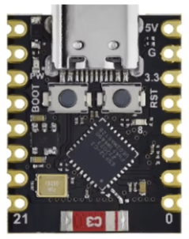
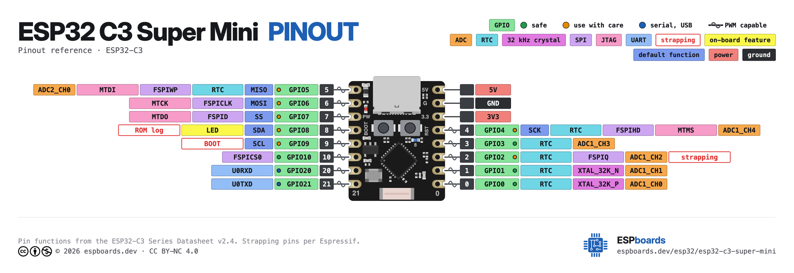

Der ESP32 ist ein winziger, günstiger Computer – ein Mikrocontroller. Er hat keinen Bildschirm und keine Tastatur, dafür viele kleine Anschlüsse. Einmal programmiert, läuft dein Programm allein auf dem Chip, ganz ohne Handy oder PC. Viele ESP32 können sogar WLAN und Bluetooth.
Wir benutzen das kleine Board ESP32-C3 SuperMini. Mehr brauchst du zum Starten nicht: Handy, ein USB-Kabel (OTG) und diesen Chip.
Damit der ESP32 unsere Python-Programme versteht, muss einmal MicroPython darauf installiert werden. Das macht die App selbst:
Nur einmal nötig – danach bleibt MicroPython auf dem ESP32.

Die kleinen Beinchen heißen Pins (GPIO = „General Purpose Input/Output"). Über sie redet der Chip mit der Außenwelt. Jeder Pin kann auf verschiedene Arten benutzt werden:
b.do0 = 1if b.di0:x = b.a0b.do0 = 128Wichtig: Der ESP32 arbeitet mit 3,3 Volt. Manche Bauteile brauchen 5 V – darauf achten wir später. Und: eine LED nie ohne Vorwiderstand direkt an einen Pin.
Du schreibst echtes Python (genauer: MicroPython, das direkt auf dem ESP32 läuft) – nur in einer kurzen, handy-freundlichen Schreibweise. Das Board ist schon als b vorhanden, dazu die eingebaute LED led und die BOOT-Taste b1:
led.v = 1 # eingebaute LED an
b.do0 = 1 # Ausgang 0 an
if b1: # BOOT-Taste gedrückt?
log("gedrückt")
wert = b.a0 # Analogwert lesen
wait(500) # 500 ms warten
Alles normale Python ist erlaubt: Variablen, while True:,
if / else, for, eigene Funktionen mit def,
Rechnen. Mit log(...) schickst du Werte zurück aufs Handy.
Jede Lektion hat die gleichen Schritte – und ist in jedem Schritt lauffähig:
Mit „↩ Kurs" kommst du jederzeit zur Lektion zurück, mit ↶ machst du eingefügten Code rückgängig.
Stärken dieses Kurses:
Grenzen (bewusst):
Wenn dir Mikrocontroller, IoT und Python Spaß machen, geht es so weiter:
Bereit? Dann geht's los mit der ersten blinkenden LED.